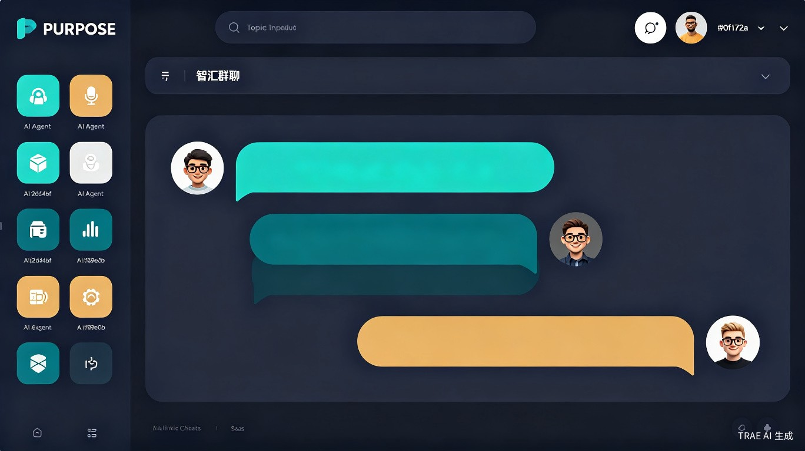
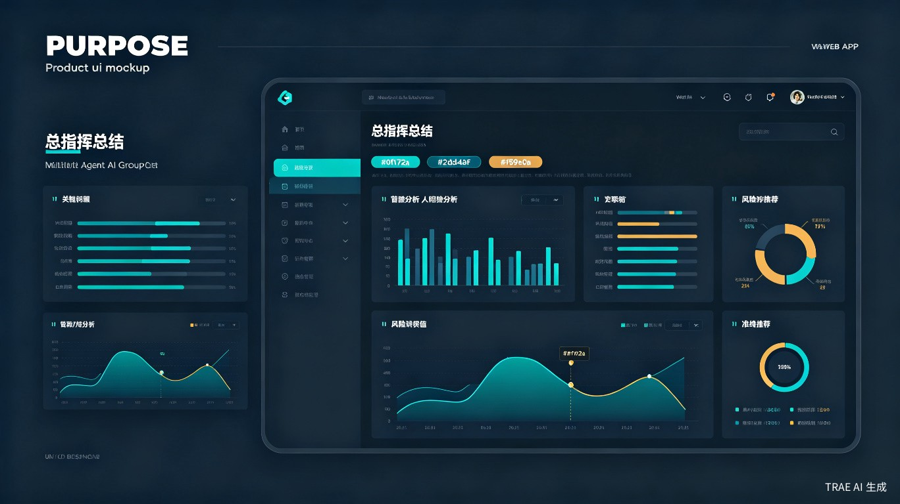

让不同大模型、不同角色的 AI 智能体围绕一个话题自动展开深度讨论，最终由总指挥角色输出结构化分析与结论。
▼ 查看产品方案从痛点出发，用群体智慧重新定义 AI 交互方式。
单一 AI 模型在复杂议题上往往存在视角单一、思维盲区、缺乏辩论的问题，用户难以获得全面、深入、经过碰撞的分析结论。
灵感来源于人类专家圆桌讨论——不同背景的人围绕同一议题各抒己见，往往能激发出更有价值的洞察。我们想把这种"群体智慧"机制引入 AI 交互，让多个大模型以不同角色身份自动对话。
一个Web 应用 / 小程序，用户输入话题后，系统自动创建多个 AI 角色（基于不同大模型），它们在虚拟群聊中自动进行多轮讨论，最终由总指挥角色生成结构化总结报告。
面向需要多角度深度分析的核心用户群体。
需要多角度评估商业决策风险与机会
需要快速梳理某一领域的不同学派观点
需要激发创意、收集多元视角素材
需要评估技术方案优劣与潜在风险
| 痛点 | 现状 | 智汇群聊的解决方式 |
|---|---|---|
| 视角单一 | 一个模型一种观点 | 多模型、多角色同时参与 |
| 缺乏互动 | 问答式单向输出 | 角色间自动辩论、补充、质疑 |
| 整理困难 | 用户手动汇总多轮对话 | 总指挥自动输出结构化报告 |
| 效率低下 | 反复切换工具/模型 | 一键发起，全自动运行 |
从商业价值、效率提升、社会价值三个维度，说明智汇群聊的核心价值。
通过 SaaS 订阅模式向企业用户收费，或按调用量计费。多模型聚合能力形成技术壁垒，高价值分析报告可直接服务于商业决策，具备明确的付费意愿基础。
将原本需要数小时的人工调研、对比、整理工作压缩到几分钟内完成。用户只需输入一个话题，系统自动完成角色创建、多轮对话、观点碰撞、总结输出全流程。
降低高质量深度分析的获取门槛，让中小企业和个人用户也能享受到"专家顾问团"级别的智力支持，促进信息平权与决策民主化。
从话题输入到报告输出，全自动化流水线。
逻辑严密、数据驱动
效率优先、风险控制
发散思维、敢于突破
创新优先、拥抱变化
关注社会伦理、人文关怀
公平优先、人本主义
关注可行性、工程落地
技术优先、实用主义
全局视野、结构化思维
客观中立、综合平衡
以下是智汇群聊的产品界面概念设计，展示核心交互体验。

用户输入话题后，多个 AI 角色在虚拟群聊中实时展开多轮讨论，支持实时观看对话过程。

总指挥角色在讨论结束后自动生成结构化分析报告，包含关键洞察、利弊分析、风险评估和最终建议。
五大功能模块，覆盖从话题创建到报告输出的完整链路。
浏览热门讨论话题和公开报告，发现其他用户创建的精彩讨论，一键参与或复用。
输入话题，选择角色数量和类型，设定讨论轮数，一键启动多智能体自动群聊。
观看 AI 角色实时对话过程，支持暂停、继续、手动介入引导讨论方向。
查看、导出、分享结构化总结报告，支持 PDF / Markdown / Word 多种格式。
自定义创建专属 AI 角色，设定性格、专业背景、价值取向和对话风格。
开放 RESTful API，支持将多智能体讨论能力集成到第三方应用和工作流中。